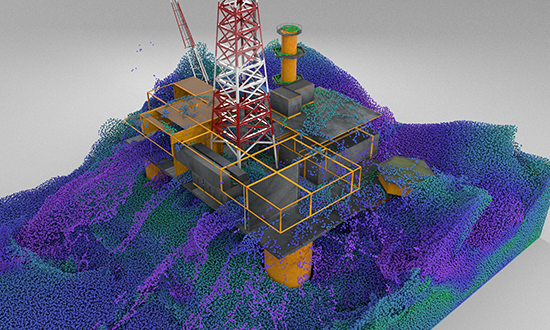

|
I am a third-year PhD student in Computer Science at the University of Toronto, advised by Eitan Grinspun. My research focuses on computer graphics, particularly on exploring shape spaces and representing their fundamental structures. I develop methods to capture core properties, such as eigenfunctions and discontinuities, across shape families, enabling new applications in simulation and design. Before beginning my Ph.D. studies, I received my master's degree from the School of Software & Microelectronics at Peking University, where I had the opportunity to work on solid-fluid coupling with Prof. Xiaowei He, Prof. Sheng Li, and Prof. Guoping Wang. I received my bachelor's degree from Beihang University in 2019. |
|
Yue Chang,
Otman Benchekroun ,
Maurizio M. Chiaramonte,
Peter Yichen Chen,
Eitan Grinspun ,
SIGGRAPH North America 2025 [Best Paper Award] |
|
|
Yue Chang,
Mengfei Liu ,
Zhecheng Wang,
Peter Yichen Chen,
Eitan Grinspun ,
SIGGRAPH North America 2025 [Best Paper Award Honorable Mention] |
|
|
Siyuan Chen ,
Yixin Chen ,
Jonathan Panuelos ,
Otman Benchekroun ,
Yue Chang,
Eitan Grinspun ,
Zhecheng Wang
SIGGRAPH North America 2025 |
|
|
Shusen Liu,
Xiaowei He,
Yuzong Guo,
Yue Chang,
Wencheng Wang,
ACM Transactions on Graphics, Presented at SIGGRAPH North America 2024 |
|
|
Peter Yichen Chen,
Jinxu Xiang,
Dong Heon Cho,
Yue Chang,
G A Pershing,
Henrique Teles Maia,
Maurizio M. Chiaramonte,
Kevin Carlberg,
Eitan Grinspun
International Conference on Learning Representations (ICLR), 2023 [Notable-top-25%] [Best Paper Award, Neural Fields Workshop at ICLR 2023] |
|
|  |
Yue Chang,
Shusen Liu,
Xiaowei He,
Sheng Li,
Guoping Wang
Compute Graphics Forum (Pacific Graphics), 2020 |